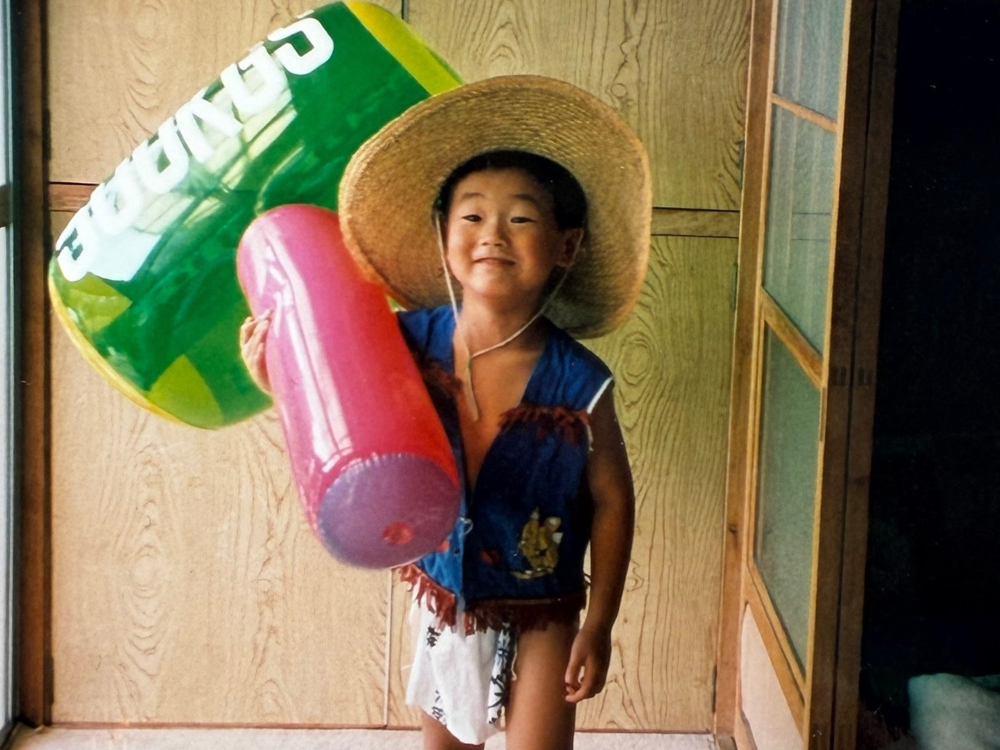
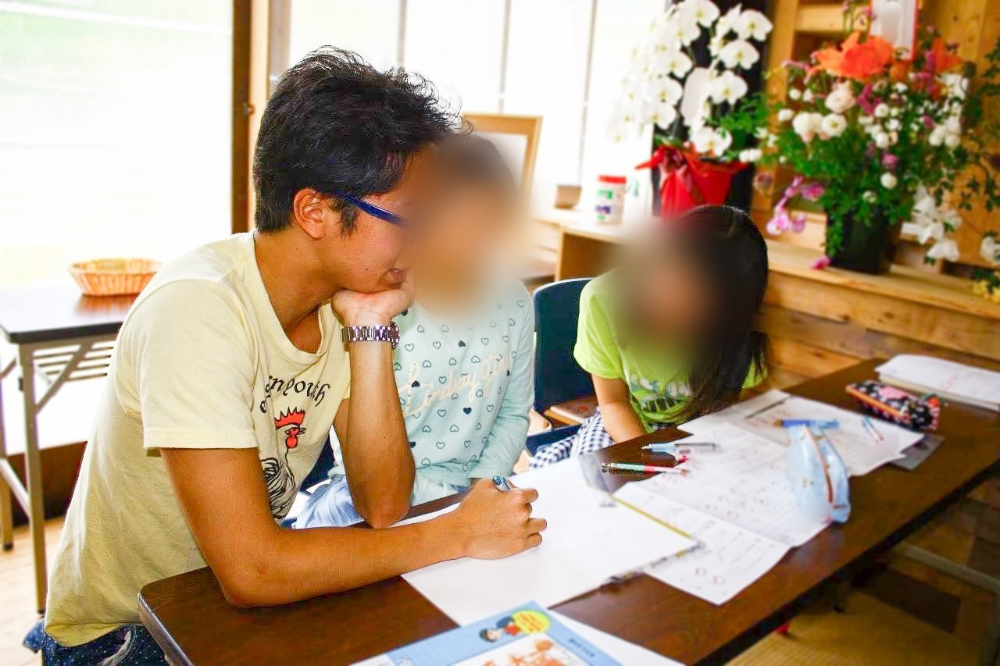
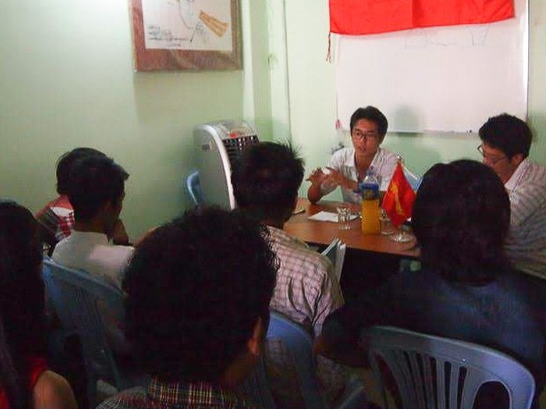
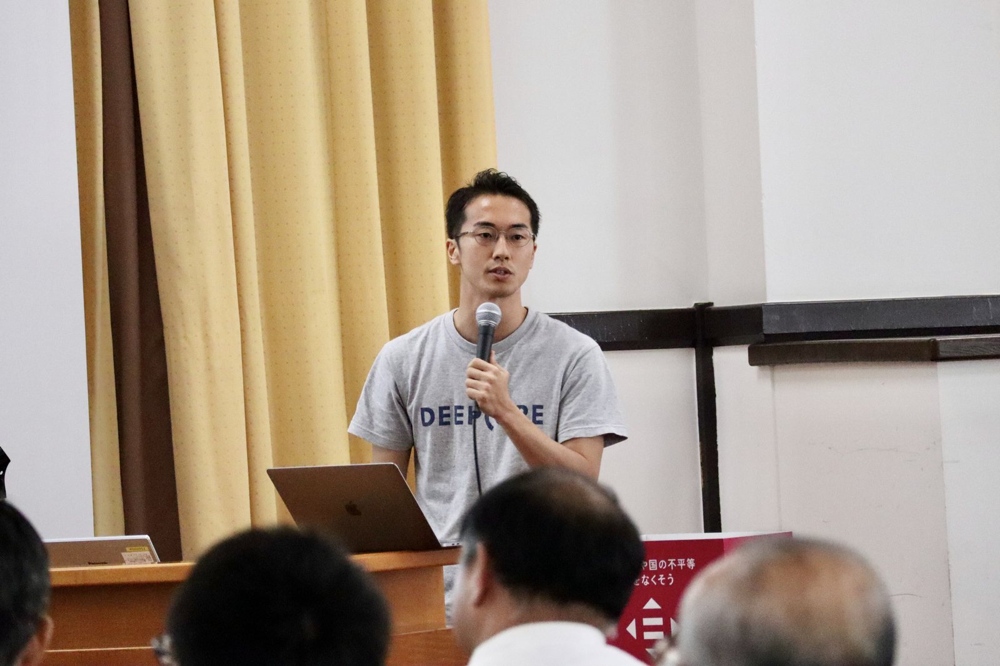
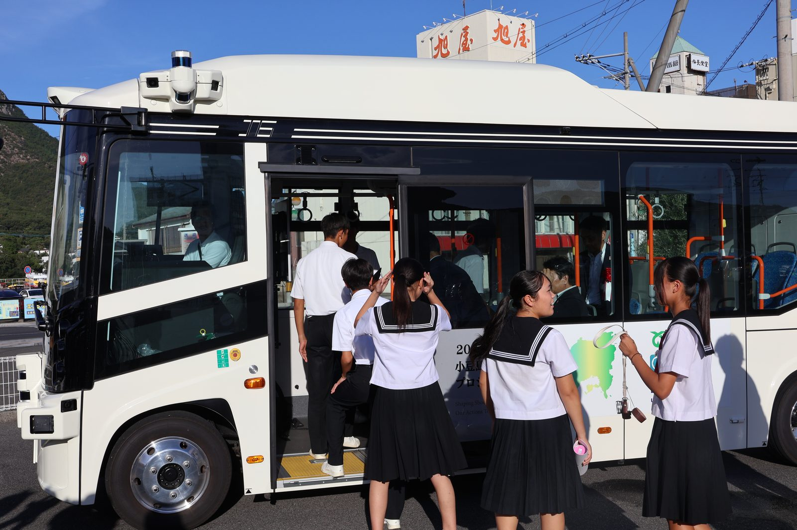
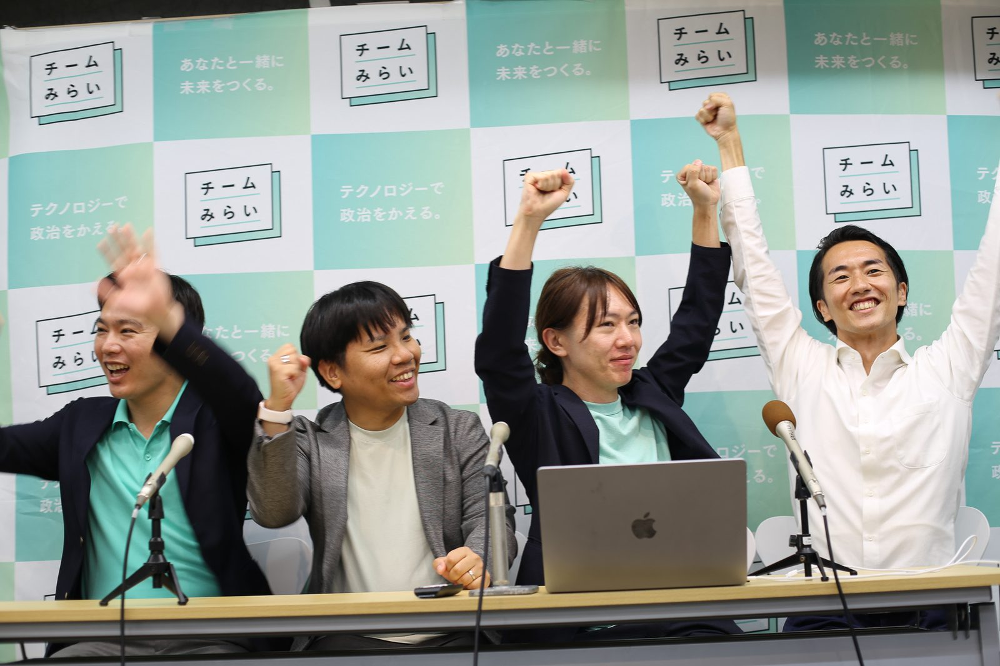
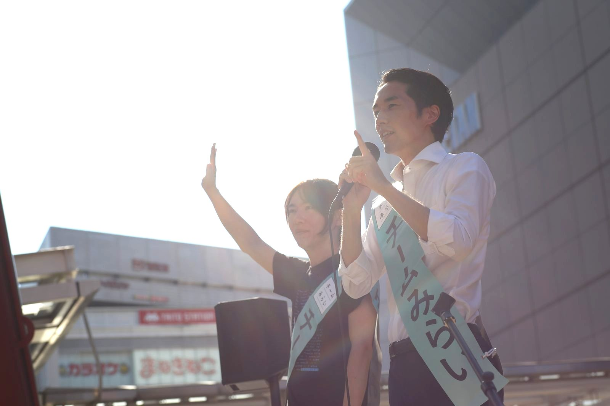

生い立ち

三兄弟の末っ子として、横浜の団地で生まれました。近所に畑や川や雑木林がある町を、自転車で走り回って子ども時代を過ごします。群馬で農家を営んでいた祖父母の家にも、長期休みのたびに遊びに行きました。
小学生でラグビーを始め、高校まで楕円のボールを追いかけました。体の大きさも速さも違う一人ひとりに役割があり、全員で前に進むのがラグビーというスポーツ。チームで動くことの原点を教わりました。高校を出た後は、一年の浪人生活。予備校の合間に、歴史や哲学の本や漫画をのめり込むように読みました。このときの読書が、文系の道に進むきっかけになりました。

大学1年の年度末に、東日本大震災が起きました。石巻の缶詰工場の片付けに始まり、南三陸や登米では子どもたちの学習支援を手伝いました。何度も言われた「テレビでは報道されなくなった。風化させないでくれ」という言葉は、いまも心に刻まれています。

東京大学では法学部に進むつもりが、人の暮らしを現場から考えられる文化人類学に転向。大学2年のとき、日本で暮らすミャンマー難民の家族と出会ったことをきっかけに、10年近くミャンマーに通いました。社会科学を自由に学ぶことができなかったミャンマーで民主主義について学びあった同世代の学生たちは、今でも貴重な仲間です。少数民族の避難民キャンプでは、予算の使いみちを調査し、学校の修繕や机・椅子づくりに充てました。民主主義は当たり前ではない——それを現場で教わりました。
大学時代に打ち込んだのがビーチラグビー。全国大会常連のチームでしたが、キャプテンを務めた年は全国大会への出場を逃しました。この悔しさが忘れられず、卒業後もクラブチームでプレーを続け、2015年と2017年に全国優勝。回り道でも、続けていれば目標を達成できる。そう教わった経験です。

大学院では文化人類学に加えて、テクノロジーと社会の関係を考える科学技術社会論を学びました。研究室にとどまらず、現場での実践も始めます。東京大学新聞社では、日本で一番古い学生メディアのデジタル化を推進。専門メディア「自動運転の論点」では編集長を務め、その成果は共著『モビリティと人の未来——自動運転は人を幸せにするか』（平凡社）として出版。AI特化のインキュベーターでは研究員として、AI技術とスタートアップの分析に取り組みました。

2018年、大学院在学中にまちづくりのITスタートアップ・scheme vergeを共同創業し、香川県小豆島に拠点を構えます。6年がかりで島に自動運転バスを走らせました。忘れられないのは70代の婦人会会長さんの言葉。「自動運転で事故が起こることよりも、島がなくなる方がもっと怖い」。テクノロジーは暮らしと文化を守る手段になる——私の活動の軸は小豆島で育てていただきました。
会社が成長するにつれて、全国の現場で仕事をさせていただきました。瀬戸内国際芸術祭のシステムづくりをはじめ、伊勢、知多半島、越前、北九州など、各地のまちづくりに携わりました。地域の事業者や自治体の方々と何度も現場に足を運び、地域ごとに異なる暮らしと課題に向き合った経験が、いまの政治活動の土台になっています。

「自動運転政策について教えてほしいから、ランチ食べない？」。高校の友人、安野貴博からそんな連絡が。会ってみると彼は言いました。「実は、今度の東京都知事選挙に出ようと思ってるんだ」。その後、2025年5月にともにチームみらいを結党。選挙対策委員長として参院選を戦い、安野を国会議員にすることとチームみらいを国政政党にすることを実現しました。

参院選の後は、党の執行役員・国会対策委員長として働きました。議席がまだ1つの新しい政党にとって、他党との信頼関係がすべての土台です。各党との交渉や政策合意を担い、人工知能基本計画への提言反映にも取り組みました。7つの政党が参加する「AIと民主主義に関する超党派勉強会」の立ち上げも、この時期の仕事です。
2026年2月、衆議院議員に初当選。いまは0歳の子どもを育てながら、国会に通っています。子育ても、地域の暮らしも、民主主義も——「当たり前」を続けるには、仕組みへの投資と、たゆまぬ手入れが要る。その第一歩を、いま踏み出したところです。